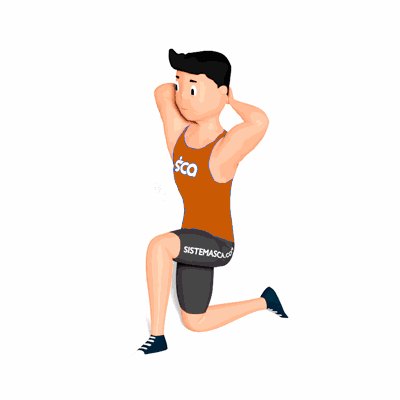

Rotação de Tronco Semi-Ajoelhado

Exercício para mobilidade do tronco, recomendado para ser realizado como pré-treino pois prepara o aluno para execução de atividades físicas.
Ficha Técnica
Tipo: Mobilidade
Grupo Muscular: Costas
Aparelho: Nenhum
Músculos: Nenhum
Como realizar
- Fique em posição semi-ajoelhado;
- Coloque as mãos atrás da cabeça ou fique com os braços abertos, essa é sua posição inicial;
- Realize uma rotação do tronco para o lado da perna que está a frente;
- Retorne a posição inicial e ao terminar as repetições, inverta a posição das pernas e repita os movimentos.
 RC STORE
RC STORE